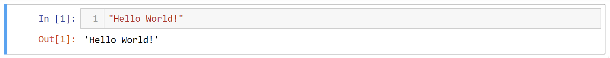
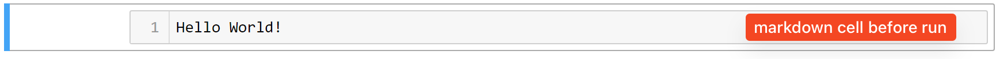
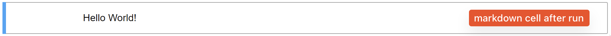

Basics of Jupyter Notebook
Contents
Basics of Jupyter Notebook#
What is Jupyter Notebook#
An Integrated Development Environment (IDE) embedded in web browser.
Experiment with your codes dynamically (run your codes CELL BY CELL).
A light-weight application runs inside ArcGIS Pro or a web browser.
Powerful in sharing, visualizing, and presenting ideas and results of analysis.
How to create a new Python Notebook#
{kind=link}
{kind=link}
How to run codes in a cell#
Ctrl+Enter: run a cell and stay focus on the current cell.Shift+Enter: run a cell and move selection to the next cell.Alt+Enter: run a cell and insert a new cell below the current cell.
Two types of cell#
Code cell: contains Python codes ready to run, indicated by
In [ ].Markdown cell: contains Markdown codes, without
 In [ ].
Tip
Follow the same way mentioned above to run both Markdown cell and Code cell.
Two cell modes#
Cells in Jupyter Notebook can be in either one of two modes:
Command mode: indicated by a blue vertical bar; press
Esckey to enable.Edit mode: indicated by a green vertical bar; press
Enterto enable or simply click the cell.
Useful shortcuts (only when in command mode)#
A/B: Create a new cell above/below the current cell.UP/DOWN: Arrow key to navigate between cells.M: Convert a cell from code mode to markdown code.Y: Convert a cell from markdown mode to code mode.D,D: Delete a cell.L: Toggle line number.F: Find and replace text in markdown.H: Show all keyboard shortcuts.
Tip
Multi-cursor support in Jupyter Notebook
Ctrl+ mouse clickAlt+ mouse click
Name |
Country |
Continent |
UN Estimation (2018) |
Urban Area |
|---|---|---|---|---|
Tokyo |
Japan |
Asia |
37,400,068 |
4,751 |
Delhi |
India |
Asia |
28,514,000 |
14,272 |
Shanghai |
China |
Asia |
25,582,000 |
5,436 |
Sao Paulo |
Brazil |
South America |
21,650,000 |
6,949 |
Mexico City |
Mexico |
South America |
21,581,000 |
9,017 |
Cairo |
Egypt |
Africa |
20,076,000 |
9,844 |
Mumbai |
India |
Asia |
19,980,000 |
22,010 |
Beijing |
China |
Asia |
19,618,000 |
4,659 |
Dhaka |
Bangladesh |
Asia |
19,578,000 |
36,928 |
Osaka |
Japan |
Asia |
19,281,000 |
5,129 |
New York |
United States |
North America |
18,819,000 |
684 |
Karachi |
Pakistan |
Asia |
15,400,000 |
14,648 |
Buenos Aires |
Argentina |
South America |
14,967,000 |
5,033 |
Chongqing |
China |
Asia |
14,838,000 |
5,378 |
Istanbul |
Turkey |
Europe |
14,751,000 |
11,135 |
Kolkata |
India |
Asia |
14,681,000 |
13,830 |
Manila |
Philippines |
Asia |
13,482,000 |
12,798 |
Lagos |
Nigeria |
Africa |
13,463,000 |
7,877 |
Rio de Janeiro |
Brazil |
South America |
13,293,000 |
6,181 |
Tianjin |
China |
Asia |
13,215,000 |
3,886 |